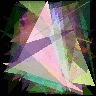
N=2, K=1 gave the best result
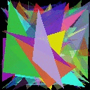
N=2, K=2 gave the best result
N=2, K=1 gave the best result
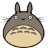
N=4, K=8 gave the best result
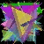
N=1, K=8 gave the best result
The purpose of this project is to recreate Roger Alsing's work on genetic programming to create art. The population consists of approximations to a given image. Each image uses P polygons, where P=100 for the results on this page. N is the population size and K is the number of new children created per generation. T is the number of generations displayed in each animation. The fitness of the image is a measure of how closely it matches the original image. The learning curve shows how the fitness of the best approximation improves over time. The 3D graphs depict how the fitness after 25000 generations varies with N and K.
| Original image | Approximation | Learning curve | ||
|---|---|---|---|---|
| 96×96 pixels |
P=100, N=1, K=2 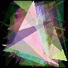 |
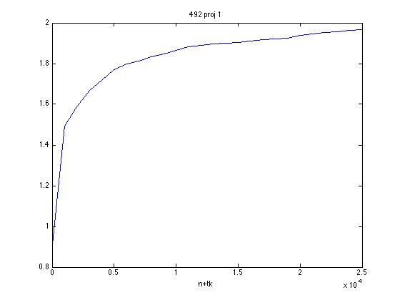 | 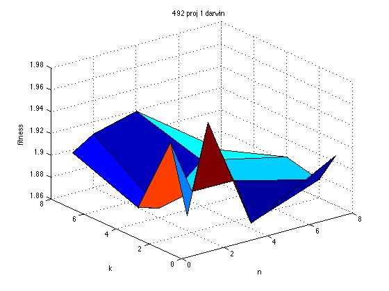 N=2, K=1 gave the best result | |
| 102×102 pixels |
P=100, N=1, K=2 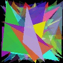 |
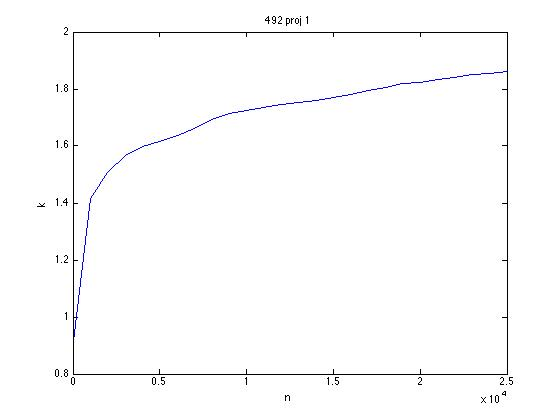 | 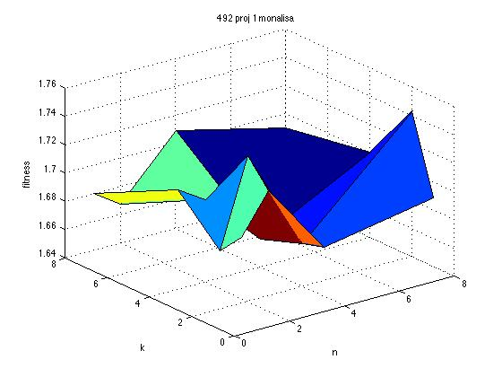 N=2, K=2 gave the best result | |
| 102×102 pixels |
P=100, N=1, K=2 |
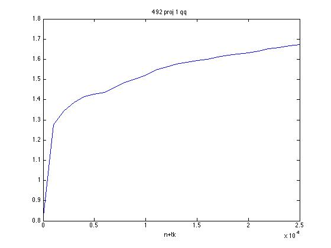 | 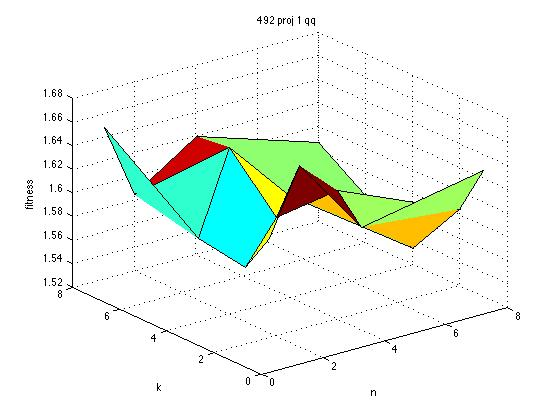 N=2, K=1 gave the best result |
|
| 128×128 pixels 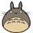 |
P=100, N=1, K=2 |
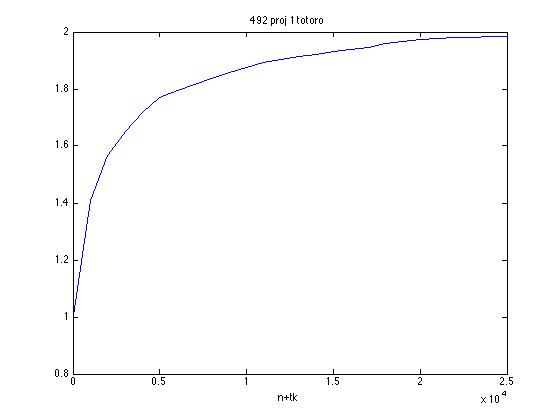 | 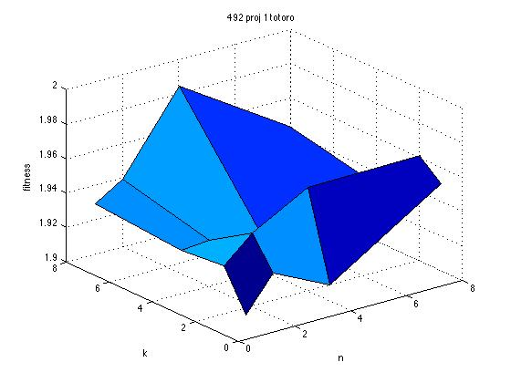 N=4, K=8 gave the best result |
|
| 300×293 pixels |
P=100, N=1, K=2 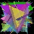 |
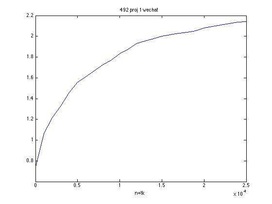 | 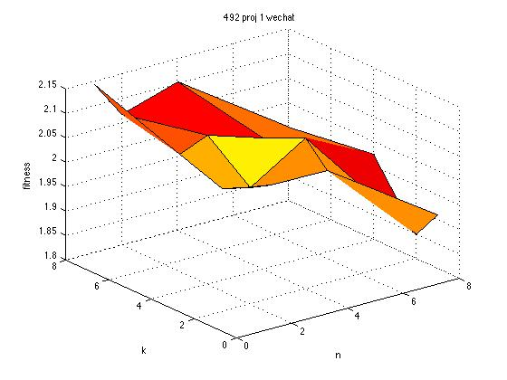 N=1, K=8 gave the best result |
Mutations used:
Random triangles were created by picking a point on the image with uniform distribution, Random colors were picked using uniform distribution over the RGB color space.
Parents were selected in this way: Created a sorted vector of the N potential parents based on their fitness. Give each potential parent an accumulated fitness normalised to be in [0,1], with each interval proportional to its fitness. Use alphaGen(randEngine) to created an uniformly distributed random double between 0 and 1. In this way, the possibility of the random double lying in a certain potential parent interval is proportional to the fitness of the potential parent. Therefore, the potential parent possibility to be selected to be a parent is proportional to its fitness. Repeat for K rounds and we have K children.